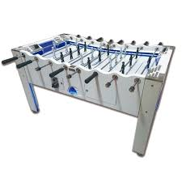

Linmania
Aquest lloc web està dedicat al món del futbolí professional. Ací podràs trobar informació sobre la seva història, regles, jugadors destacats i tornejos importants. També inclou recursos útils per aprendre i millorar les teues habilitats.
Descripció breu del projecte
El projecte consistirà en la creació d'un lloc web dedicat al futbolí professional. La web oferirà informació sobre la història i les regles del futbolí, fitxes de jugadors i equips destacats, cobertura de tornejos i resultats, així com recursos d'aprenentatge com tècniques i vídeos. L'objectiu és disposar d'una plataforma clara i funcional perquè aficionats i jugadors puguin aprendre, seguir competicions i connectar amb la comunitat.
Objectius principals
- Publicar notícies, calendaris i resultats de tornejos.
- Proporcionar recursos didàctics (tutorials i vídeos) per millorar la tècnica.
- Facilitar la comunicació amb clubs i organitzadors mitjançant un formulari de contacte en fases posteriors.